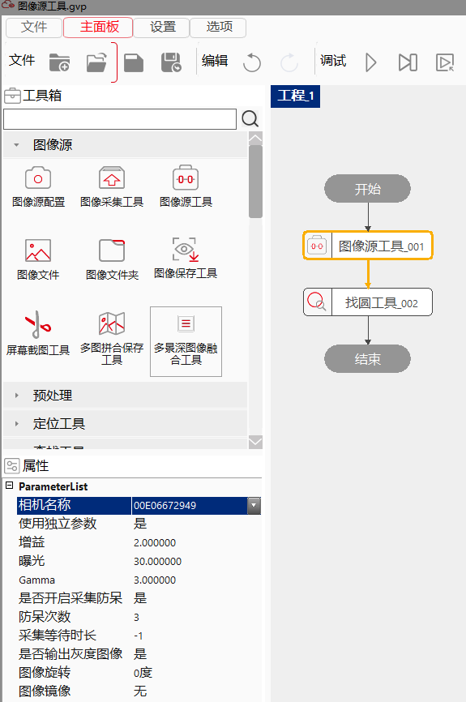
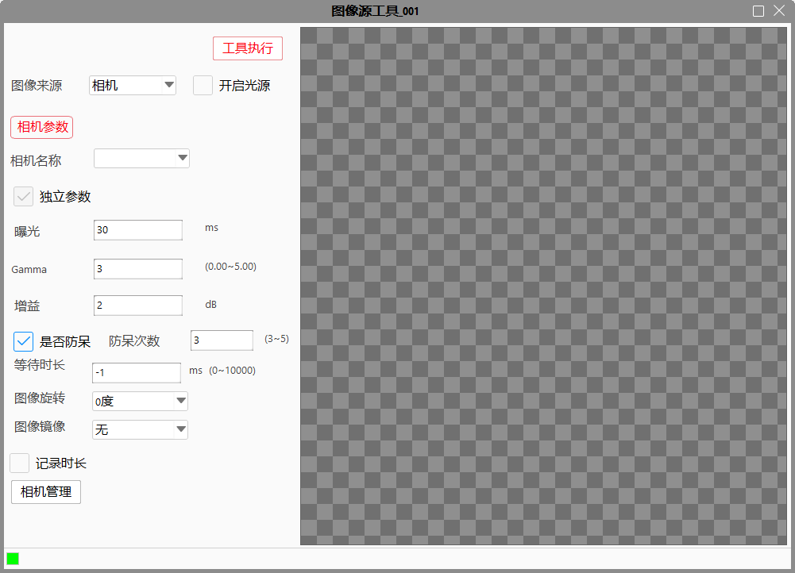
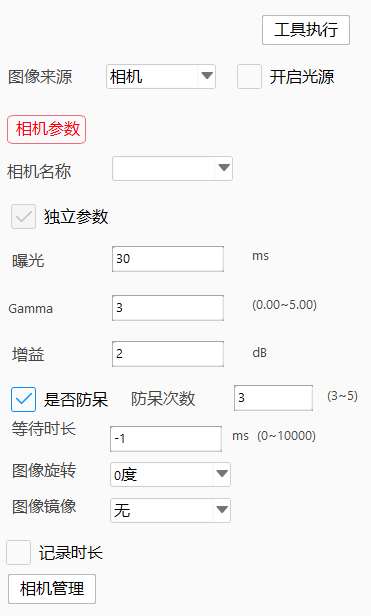
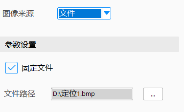
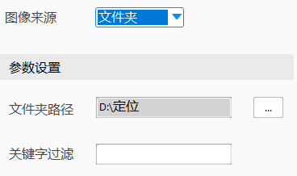
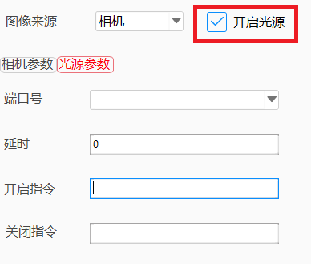
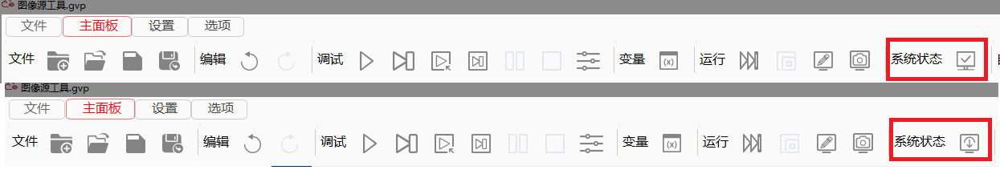
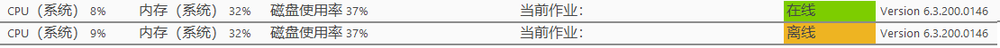

Công cụ nguồn ảnh được dùng để thay thế công cụ thu nhận ảnh, công cụ ảnh đơn và công cụ thư mục ảnh nhằm đơn giản hóa quy trình thu nhận ảnh. Do đó, chức năng chính của nó là lấy ảnh và xuất ra cho các công cụ khác sử dụng. Đồng thời, công cụ còn tích hợp chức năng điều khiển đèn và tăng cường hình ảnh.

Công cụ nguồn ảnh sẽ quyết định nguồn ảnh dựa trên trạng thái hệ thống. Khi hệ thống ở trạng thái trực tuyến, công cụ sẽ lấy ảnh từ camera; khi hệ thống ở trạng thái ngoại tuyến, công cụ sẽ lấy ảnh từ tệp hoặc thư mục ảnh.


Tên camera
Hiển thị danh sách thả xuống các camera đang kết nối, chọn tên camera cần lấy ảnh.
Tham số độc lập
Khi không chọn “tham số độc lập”, công cụ sẽ sử dụng các tham số bên trong camera khi thực thi, các thiết lập về phơi sáng, Gamma và độ lợi sẽ bị ẩn. Khi chọn “tham số độc lập”, các thiết lập này sẽ hiển thị và có thể cài đặt trong công cụ mà không làm thay đổi giá trị bên trong camera.
Phơi sáng
Chỉ khả dụng khi bật “tham số độc lập”, dùng để thiết lập giá trị phơi sáng khi công cụ hoạt động. Nếu không chọn thì mục này sẽ bị ẩn.
Giá trị Gamma
Chỉ khả dụng khi bật “tham số độc lập”, dùng để thiết lập giá trị Gamma khi công cụ hoạt động. Nếu không chọn thì mục này sẽ bị ẩn.
Độ lợi (Gain)
Chỉ khả dụng khi bật “tham số độc lập”, dùng để thiết lập độ lợi của camera khi công cụ hoạt động. Nếu không chọn thì mục này sẽ bị ẩn.
Chống lỗi vận hành
Cho biết camera có bật chức năng chống lỗi vận hành hay không.
Số lần chống lỗi
Số lần thử lại khi bật chức năng chống lỗi.
Thời gian chờ
Giá trị -1 là chờ vô thời hạn, giá trị lớn hơn -1 là thời gian chờ (đơn vị: mili giây), giá trị tối đa là 10.000.
Xoay ảnh
Xử lý xoay ảnh được thu từ camera, gồm các tùy chọn: 0 độ, 90 độ, 180 độ, 270 độ. Trong đó 0 độ là không xử lý. Chức năng này bổ sung cho cài đặt xoay trong quản lý camera.
Gương ảnh (lật ảnh)
Xử lý lật ảnh được thu từ camera, gồm: không, ngang, dọc, ngang+dọc. “Không” nghĩa là không xử lý. Chức năng này bổ sung cho cài đặt lật ảnh trong quản lý camera.
Ghi nhật ký thời gian
Khi chọn mục này, quá trình bật đèn và thu ảnh sẽ được ghi lại trong nhật ký để hỗ trợ kiểm tra sự cố khi công cụ thực thi lâu.
Xuất ảnh thang xám
Chỉ khả dụng với camera RGB. Khi chọn, công cụ sẽ xuất ảnh RGB và đồng thời xuất thêm ảnh thang xám. Nếu không chọn, ảnh thang xám sẽ không được xuất.

Tệp cố định
Chọn “Có” để cho phép thiết lập đường dẫn tệp ảnh; chọn “Không” thì không thể thiết lập đường dẫn, công cụ sẽ nạp ảnh từ đường dẫn tệp động.
Đường dẫn tệp
Đường dẫn đến ảnh được nạp từ máy tính cục bộ.

Đường dẫn thư mục
Đường dẫn thư mục chứa các ảnh cần nạp.
Lọc theo từ khóa
Dùng để lọc ảnh trong thư mục: nếu tên tệp ảnh chứa từ khóa thì ảnh sẽ được giữ lại, các ảnh khác sẽ bị loại bỏ.

Số hiệu cổng
Hiển thị danh sách các cổng không có giao thức hiện có, chọn cổng mà đèn chiếu sáng đang kết nối để điều khiển.
Độ trễ
Thiết lập khoảng thời gian trễ giữa thời điểm bật đèn và thời điểm camera chụp ảnh.
Lệnh bật
Lệnh gửi để bật đèn chiếu sáng.
Lệnh tắt
Lệnh gửi để tắt đèn chiếu sáng.
Thông qua thao tác nút chuyển trạng thái online/offline trong thanh trạng thái của bảng điều khiển chính (như hình dưới), có thể thực hiện chuyển đổi giữa trạng thái online và offline của hệ thống. Nhấp vào “Online” để chuyển sang trạng thái online, nhấp vào “Offline” để chuyển sang trạng thái offline.

Hiển thị trên thanh trạng thái:

| Mô tả hiện tượng | Cách xử lý |
|---|---|
| Ở trạng thái online, không lấy được ảnh | Kiểm tra trạng thái kết nối của camera; vào cửa sổ quản lý camera để kiểm tra có thể lấy ảnh bình thường không |
| Ở trạng thái online, đã bật đèn nhưng đèn không sáng | Kiểm tra xem cổng điều khiển đèn có hoạt động bình thường không; nếu cổng bình thường, hãy kiểm tra lại lệnh điều khiển đèn có đúng không |
| Lấy ảnh từ tệp tin thất bại | Kiểm tra đường dẫn ảnh đã được thiết lập chưa và tệp ảnh đã chọn có hợp lệ không |
| Lấy ảnh từ thư mục thất bại | Kiểm tra đường dẫn thư mục có đúng không và trong thư mục được chọn có ảnh hay không |
| Tên tham số | Mô tả tham số |
|---|---|
| Tên camera | Tên (số serial) của camera dùng để chụp ảnh. |
| Có sử dụng tham số độc lập không | Nếu không sử dụng, công cụ sẽ dùng các tham số mặc định của camera để chụp ảnh; nếu có, người dùng cần tự thiết lập các giá trị như tăng cường (gain) và thời gian phơi sáng. |
| Gain | Khi sử dụng tham số độc lập, đây là mức tăng cường của camera, đơn vị dB. Chỉ khả dụng ở trạng thái online. |
| Gamma | Khi sử dụng tham số độc lập, đây là giá trị Gamma của camera. |
| Phơi sáng | Khi sử dụng tham số độc lập, đây là thời gian phơi sáng của camera, đơn vị mili giây. Chỉ khả dụng ở trạng thái online. |
| Có bật chế độ phòng lỗi không | Camera có bật chế độ chống lỗi hay không. |
| Số lần chống lỗi | Số lần thử lại khi chống lỗi; chỉ khả dụng khi bật chức năng chống lỗi. |
| Thời gian chờ chụp | Giá trị -1 là chờ vô hạn, giá trị lớn hơn -1 là thời gian chờ (tối đa 10000 ms). |
| Có xuất ảnh xám không | Khi dùng camera RGB, có thể chọn xuất ảnh xám cùng lúc với ảnh RGB. |
| Xoay ảnh | Xử lý xoay ảnh thu được từ camera: 0°, 90°, 180°, 270° (0° là không xoay). Chức năng này dựa trên cấu hình trong phần quản lý camera. |
| Gương ảnh | Xử lý gương ảnh thu được từ camera: Không, Ngang, Dọc, Ngang & Dọc (Không là không xử lý). Chức năng này cũng dựa trên phần quản lý camera. |
| Nguồn ảnh | Có thể chọn từ tệp hoặc thư mục. Chỉ khả dụng ở trạng thái offline. Chọn tệp thì công cụ nạp ảnh từ tệp; chọn thư mục thì công cụ nạp ảnh từ thư mục. |
| Tệp cố định | Khi nguồn ảnh là tệp: chọn Có để dùng đường dẫn cố định, chọn Không để dùng đường dẫn động. |
| Đường dẫn tệp | Đường dẫn ảnh được nạp. Chỉ hiện nếu chọn “Tệp cố định” là Có. |
| Đường dẫn thư mục | Khi nguồn ảnh là thư mục, đây là đường dẫn đến thư mục ảnh. |
| Từ khóa lọc | Khi nguồn ảnh là thư mục, dùng để lọc ảnh theo tên tệp: chỉ giữ lại các ảnh chứa từ khóa trong tên tệp. |
| Đường dẫn tệp động | Khi nguồn ảnh là tệp và không chọn đường dẫn cố định, đây là nơi thiết lập đường dẫn ảnh động. |
| Tên tham số | Mô tả tham số |
|---|---|
| Ảnh đầu ra | Ảnh xám đầu ra, bao gồm chiều dài, chiều rộng và kích thước điểm ảnh. |
| Ảnh RGB đầu ra | Ảnh màu đầu ra, bao gồm chiều dài, chiều rộng và kích thước điểm ảnh. |
| Ảnh độ sâu đầu ra | Ảnh độ sâu đầu ra, bao gồm chiều dài, chiều rộng và kích thước điểm ảnh. |
| Ảnh đường viền đầu ra | Ảnh đường viền đầu ra, bao gồm tổng số điểm và số điểm hợp lệ. |
| Tệp hiện tại | Tên đường dẫn của ảnh hiện tại; hiển thị khi nguồn ảnh là thư mục. |
| Tên tệp hiện tại | Tên ảnh hiện tại; hiển thị khi nguồn ảnh là thư mục. |
| Đã duyệt đến cuối | Đã duyệt đến cuối danh sách tệp hay chưa; hiển thị khi nguồn ảnh là thư mục. |
| Lệnh bật đèn | Chuỗi lệnh bật đèn đầu ra; chỉ hiển thị khi gửi lệnh thành công, nếu không sẽ trả về chuỗi rỗng. |
| Kết quả thực thi | Kết quả thực thi của công cụ. |
| Thời gian thực thi | Thời gian thực thi của công cụ. |
Tham khảo tại “\Samples\图像源工具.gvp”.